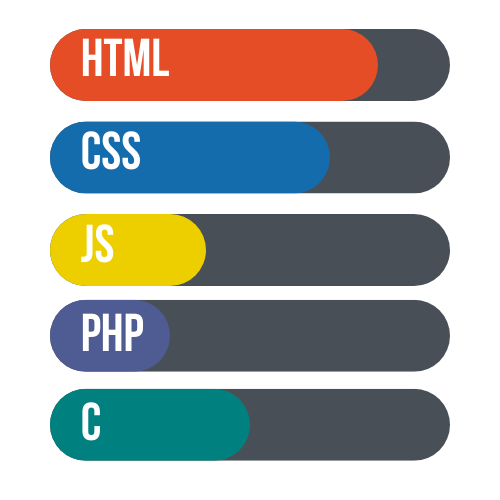

personal details
Name: Jozua Fabillar Patalan
Mobile No: (+63) 947 103 8098
Gender: Male
Marital Status: Single
Nationality: Filipino
Father's Name: Candido Macay Patalan
Email Address: jozuafpatalan@su.edu.ph
Date of Birth: November 06, 2004
Religion: Seventh-Day Adventist
Language: English, Tagalog, Cebuano
Education
Elementary: Jimalalud Central School
Secondary: Foundation Prep. Academy
College: Silliman University
Year Graduated: 2016
Year Graduated: 2022
Year Graduated: 2025
Skills and Hobbies

Hobbies:
- Playing Video Games
- Reading Books
- Listening to Music
Talents/Skills:
- Professional Sleeper
- Professional Slacker
- Amateur Writer